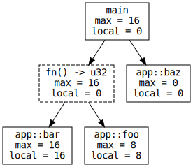
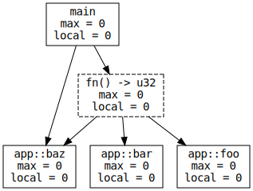
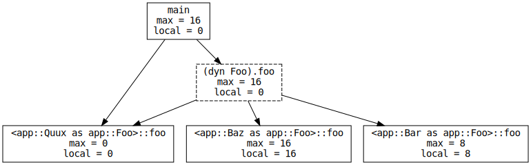
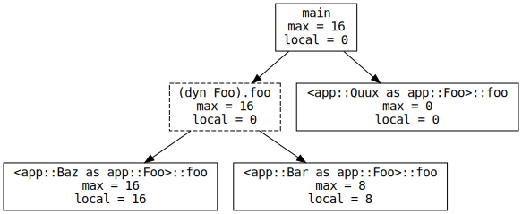
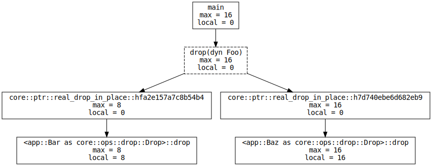

In a previous post I described the current implementation of
cargo-call-stack, a static stack usage analysis tool. In the second part of
that post I described the problems the tool runs into when dealing with indirect
function calls (both function pointer calls and dynamic dispatch) and proposed
improving the output of the tool by having rustc inject type information in
the LLVM IR it produces.
While discussing that idea with rustc developers they noted that the compiler
could emit information that’s more relevant to call graph analysis than just the
signatures of functions and trait methods. In this post I’ll describe the call
graph metadata I’m currently implementing in rustc and how it will help
tools like cargo-call-stack. By the way, I have a feature branch of
cargo-call-stack that uses this upcoming rustc feature if you want to try it
out but you’ll need to build a custom rustc.
The problem
First, let me rehash the problem cargo-call-stack has with indirect function
calls. Consider the following program, which contains a function pointer call:
static X: AtomicBool = AtomicBool::new(false);
fn main() {
let mut x: fn() -> i32 = foo;
// ..
if X.load(Ordering::Acquire) {
x = bar;
}
// function pointer call
x();
// ..
}
fn foo() -> i32 {
// ..
}
fn bar() -> i32 {
// ..
}
fn baz() -> u32 {
// ..
}
The tool (cargo-call-stack) computes the call graph from the LLVM IR of a Rust
program (reminder: we use LLVM IR because it’s pretty close in structure to the
optimized machine code and it’s relatively stable, unlike the rustc API and
MIR). The relevant parts of the LLVM IR of this program are shown below:
; app::main
define internal void @_ZN3app4main17h2788607e78870dd4E() {
; ..
; function pointer call
%3 = call i32 %2(), !dbg !140
; ..
}
; app::foo
define internal i32 @_ZN3app3foo17h9efc21ae5e8e5b5aE() {
; ..
}
; app::bar
define internal i32 @_ZN3app3bar17h1ce8c48ecc8a3452E() {
; ..
}
; app::baz
define internal i32 @_ZN3app3baz17hbb47c4b31a6d6735E() {
; ..
}
From the LLVM IR alone we know that main calls a function with signature
i32 () through a pointer. i32 () is the LLVM IR version of the Rust type
fn() -> i32. The problem in this example is that in LLVM IR integers are
always signed so the signature of function baz also becomes i32 () in the
LLVM IR. This causes the tool to wrongly consider baz as a potential callee
for the function pointer call in main.
Integers are not the only problem; LLVM will usually optimize away arguments
and return values causing, for example, functions with signatures
fn(i32) -> i32 or fn() -> i32 to become just () in LLVM IR, which is
equivalent to Rust’s fn() type.
The original proposal
My original idea to deal with this type conversion problem was to add the Rust signature to all function definitions and function pointer calls using LLVM IR metadata. Thus, the previously shown LLVM IR would become:
; app::main
define internal void @_ZN3app4main17h2788607e78870dd4E() !rust !0 {
; .. ^^^^^^^^
; function pointer call
%3 = call i32 %2(), !dbg !140, !rust !1
; ^^^^^^^^
; ..
}
; app::foo
define internal i32 @_ZN3app3foo17h9efc21ae5e8e5b5aE() !rust !1 {
; .. ^^^^^^^^
}
; app::bar
define internal i32 @_ZN3app3bar17h1ce8c48ecc8a3452E() !rust !1 {
; .. ^^^^^^^^
}
; app::baz
define internal i32 @_ZN3app3baz17hbb47c4b31a6d6735E() !rust !2 {
; .. ^^^^^^^^
}
; ..
!0 = !"fn()"
!1 = !"fn() -> u32"
!2 = !"fn() -> i32"
; ..
With this extra information the tool would be able to narrow down the list of
potential callees of the function pointer call in main to just foo and bar
since all of them have the same metadata: !rust !1, which is an alias for
!"fn() -> u32".
This works well enough in this particular example but we can do even better!
Function pointers
One of the rustc passes that runs before codegen (the MIR -> LLVM-IR pass)
analyzes the MIR of the crate to decide which functions to codegen and it can
easily detect which functions are casted / coerced into function pointers.
In the previous example, we coerced the anonymous function type fn() -> u32
{foo}, which is zero sized, into a function pointer fn() -> u32, which is
pointer sized (8 bytes on x86_64); then we did the same with the function bar.
If we tweak the metadata generation logic to only add the !rust metadata to
functions that are converted into function pointers the LLVM IR of that example
would become:
; app::main
define internal void @_ZN3app4main17h2788607e78870dd4E() {
; .. ^^^^^^^^
; function pointer call
%3 = call i32 %2(), !dbg !140, !rust !0
; ^^
; ..
}
; app::foo
define internal i32 @_ZN3app3foo17h9efc21ae5e8e5b5aE() !rust !0 {
; .. ^^
}
; app::bar
define internal i32 @_ZN3app3bar17h1ce8c48ecc8a3452E() !rust !0 {
; .. ^^
}
; app::baz
define internal i32 @_ZN3app3baz17hbb47c4b31a6d6735E() {
; .. ^^^^^^^^
}
; ..
; yes, the format of the metadata changed a bit here
!0 = !{!"fn", !"fn() -> u32"}
; ..
With this change the tool would still be able to locate the candidates for the
function pointer call in main. What would be the advantage of doing it this
way? We can reduce false positives with this approach. Consider this program:
static X: AtomicBool = AtomicBool::new(false);
fn main() {
let mut x: fn() -> u32 = foo;
if X.load(Ordering::Acquire) {
x = bar;
}
x();
baz();
}
fn foo() -> u32 {
// ..
}
fn bar() -> u32 {
// ..
}
fn baz() -> u32 {
// ..
}
This time foo, bar and baz all have the same Rust signature; however, the
function pointer call can only invoke foo or bar. If we apply the !rust
metadata only to functions that are coerced into function pointers we would end
with the following LLVM IR:
; app::main
define internal void @_() {
; ..
; `x()`
%2 = tail call i32 %spec.select() #8, !dbg !138, !rust !93
; `baz()`
tail call fastcc void @_ZN3app3baz17h9f37979edaee3ecdE(), !dbg !140
; ..
}
; app::foo
define internal i32 @() !rust !93 {
; ..
}
; app::bar
define internal i32 @_() !rust !93 {
; ..
}
; app::baz
define internal i32 @_() {
; ..
}
; ..
!93 = !{!"fn", !"fn() -> u32"}
; ..
Note that baz does not have “fn” metadata. The tool would then be able to
produce an accurate call graph:

The dashed node fn() -> u32 in the graph represents the function pointer
call (x()), which can result in either foo or bar being invoked.
If we had used the original approach of adding metadata to all functions the
above call graph would have ended with a false positive edge between fn() ->
u32 and baz.
A requisite for safely invoking a function through a pointer is first creating a function pointer from said function. In the improved approach we are tracking this operation with the “fn” metadata: no “fn” metadata means that the function is never converted into a function pointer so we can omit it from the list of callee candidates of function pointer calls. This results in less edges (false positives) compared to my original proposal.
In theory, it is possible to invoke a function that has never be converted
into a function pointer through a pointer doing something like
(mem::transmute::<usize, fn()>(0x2000_0000))() but this will result in
Undefined Behavior (UB) in most cases as the addresses of functions are only
known after linking. If the intention is to invoke a function at a known, fixed
memory address (like an interrupt handler) you are much better off using
something like extern "C" { fn interrupt(); } interrupt() which does not
result in UB but also it’s not a function pointer call – it’s a direct function
call.
The improved approach is not perfect but it’s certainly an improvement over my original proposal. Even with the improved approach, one can fabricate false positives like this:
static X: AtomicBool = AtomicBool::new(false);
fn main() {
let mut x: fn() -> u32 = foo;
if X.load(Ordering::Acquire) {
x = bar;
}
x();
baz();
// never invoked or used
let y: fn() -> u32 = baz;
}
fn foo() -> u32 { .. }
fn bar() -> u32 { .. }
fn baz() -> u32 { .. }
This produces the following incorrect call graph

As MIR optimizations get better the let y statement will get optimized away
before the pre-codegen analysis pass where the compiler decides which functions
get “fn” metadata, meaning that baz won’t have “fn” metadata in the output
LLVM IR.
Of course, even with perfect MIR optimizations one can still force a false positive by doing something like this:
fn main() {
let mut x: fn() -> u32 = foo;
if X.load(Ordering::Acquire) {
x = bar;
}
x();
baz();
// never invoked
let y: fn() -> u32 = baz;
// this prevents `y` from being optimized away both at the MIR and LLVM-IR level
unsafe { core::ptr::read_volatile(&y) }
}
fn foo() -> u32 { .. }
fn bar() -> u32 { .. }
fn baz() -> u32 { .. }
This will produce a false edge between the fn() -> u32 node and baz in the
call graph.
Trait objects
We have covered function pointers; trait objects and dynamic dispatch needs a slightly different treatment. In my original proposal all trait methods and dynamic dispatch sites get annotated with trait - method metadata. This means, for example, that the following program:
static X: AtomicBool = AtomicBool::new(false);
fn main() {
let mut to: &dyn Foo = &Bar;
if X.load(Ordering::Acquire) {
to = &Baz;
}
to.foo();
Quux.foo();
}
trait Foo {
// default implementation of this method
fn foo(&self) -> bool;
}
struct Bar;
impl Foo for Bar {
fn foo(&self) -> bool { .. }
}
struct Baz;
impl Foo for Baz {
fn foo(&self) -> bool { .. }
}
struct Quux;
impl Foo for Quux {
fn foo(&self) -> bool { .. }
}
Would result in the following LLVM IR
; main
define void @main() {
; ..
; dynamic dispatch
%4 = tail call zeroext i1 %3({}* %2) #8, !dbg !185, !rust !0
; ^^^^^^^^
; call <app::Quux as app::Foo>::foo
tail call fastcc void @_(), !dbg !186
; ..
}
; <app::Bar as app::Foo>::foo
define internal void @_(%Bar*) unnamed_addr #1 !dbg !112 !rust !0 {
; .. ^^^^^^^^
}
; <app::Baz as app::Foo>::foo
define internal void @_(%Baz*) unnamed_addr #1 !dbg !125 !rust !0 {
; .. ^^^^^^^^
}
; <app::Quux as app::Foo>::foo
define internal fastcc void @_() unnamed_addr #2 !dbg !136 !rust !0 {
; .. ^^^^^^^^
}
!0 = "(dyn Foo).foo"
From which the tool would produce the following call graph:

Which is not quite correct: the edge between the dynamic dispatch node, "(dyn
Foo).foo", and the Quux.foo node shouldn’t exist because Quux is never used
as a trait object. rustc can help with that!
VTables
Turns out the compiler also knows which types will be used as trait objects because it has to codegen a vtable for each type - trait pair so we can do better here by only emitting trait metadata for the methods of types that are coerced / casted into trait objects.
Applying that to the previous example results in the following changes in the LLVM IR:
; main
define void @main() {
; ..
; dynamic dispatch
%4 = tail call zeroext i1 %3({}* %2) #8, !dbg !185, !rust !0
; ^^^^^^^^
; call <app::Quux as app::Foo>::foo
tail call fastcc void @_(), !dbg !186
; ..
}
; <app::Bar as app::Foo>::foo
define internal void @_(%Bar*) unnamed_addr #1 !dbg !112 !rust !0 {
; .. ^^^^^^^^
}
; <app::Baz as app::Foo>::foo
define internal void @_(%Baz*) unnamed_addr #1 !dbg !125 !rust !0 {
; .. ^^^^^^^^
}
; <app::Quux as app::Foo>::foo
define internal fastcc void @_() unnamed_addr #2 !dbg !136 {
; .. ^^^^^^^^
}
; yes, the format of the metadata changed a bit here
!0 = !{!"dyn", !"Foo", !"foo"}
Which would let the tool produce an accurate call graph:

Something that I realized midway implementing this in the compiler is that you
can not attach multiple metadata nodes of the same kind (e.g. !rust) to a
define item or an instruction. This is a problem because a function
(define item) can be both dynamically dispatched and invoked via a function
pointer, i.e. it needs both “dyn” metadata and “fn” metadata. Consider the
following program:
static X: AtomicBool = AtomicBool::new(false);
fn main() {
// "dyn" metadata
let x: &dyn Foo = &Bar;
x.foo();
// "fn" metadata
let y: fn(&Bar) = Bar::foo;
}
trait Foo {
fn foo(&self);
}
struct Bar;
impl Foo for Bar { .. }
The solution we picked was to attach a metadata tuple that contains both
pieces of metadata to the define item. Namely:
; app::main
define internal void @_ZN3app4main17h63fa795f778d6e4eE() unnamed_addr #0 !dbg !141 {
; ..
call void %8({}* align 1 %3), !dbg !163, !rust !164
; ..
}
; <app::Bar as app::Foo>::foo
define internal void @_(%Bar*) unnamed_addr #0 !dbg !167 !rust !169 {
; ^^^^^^^^^^ single node
}
!164 = !{!"dyn", !"Foo", !"foo"}
; tuple with `fn` and `dyn` metadata
!169 = !{!164, !170}
!170 = !{!"fn", !"fn(&Bar) -> ()"}
Drop glue
Something which I had not considered at all in my previous post is the drop glue of trait objects.
Trait objects are a form of (open set) polymorphism that consists of erasing
the concrete type of an object leaving you with only the trait interface; this
lets you pack objects of different types, but that implement a common trait, in
a collection like Vec or store them in the same memory slot as shown in the
example below.
static X: AtomicBool = AtomicBool::new(false);
fn main() {
let mut x: Box<dyn Foo> = Box::new(Bar);
if X.load(Ordering::Acquire) {
// leak the initial value
unsafe { ptr::write(&mut x, Box::new(Baz)) }
}
drop(x);
}
trait Foo {
fn foo(&self);
}
struct Bar;
impl Foo for Bar { .. }
impl Drop for Bar { .. }
struct Baz;
impl Foo for Baz { .. }
impl Drop for Baz { .. }
Eventually a trait object has to be destroyed; what happens at that point is
that the destructor of the original type has be invoked. In the example above,
drop(x) could invoke either Bar’s or Baz’s destructor (Drop
implementation).
It should be noted that the code that’s executed on drop(x) (or when x goes
out of scope) is not x’s Drop implementation but xs drop glue and this
drop glue invokes x’s Drop implementation, if it has one. “Drop glue” is
code (a function) synthesized by the compiler for all types, even for those
that don’t implement the Drop trait. The reason for that is that even if the
type itself doesn’t implement the Drop trait its fields might so the drop glue
of the type has to run the drop glue of each field.
Going back to trait objects, trait objects store a function pointer to the drop
glue of the erased type in their vtable. The drop glue of a trait object
simply calls the drop glue stored in its vtable. This is basically a function
pointer call but we can’t use “fn” metadata in this case. To see why consider
our example: the drop glue of dyn Foo could invoke Bar’s drop glue or
Baz’s drop glue; these two functions have different signatures (fn(*mut Bar)
vs fn(*mut Baz)) and thus different “fn” metadata.
Thus we need a third kind of metadata to handle this case: enter “drop” metadata. The idea is to attach “drop” metadata to the drop glue of all types that are coerced / casted into trait objects. Likewise, we’ll attach “drop” metadata to the invocation of a trait object drop glue.
The LLVM IR of our example would then look like this:
; Function Attrs: noinline noreturn nounwind
define void @main() unnamed_addr #2 !dbg !161 {
; ..
; `drop(x)`
tail call void %2({}* nonnull align 1 inttoptr (i32 1 to {}*)) #8, !rust !131
; ^^^^^^^^^^
; ..
}
; `Baz`'s drop glue
; core::ptr::real_drop_in_place::h7d740ebe6d682eb9
define internal void @(%Baz*) unnamed_addr #0 !dbg !120 !rust !131 {
; .. ^^^^^^^^^^
; call <app::Baz as core::ops::drop::Drop>::drop
tail call fastcc void @_(), !dbg !133
; ..
}
; `Bar`'s drop glue
; core::ptr::real_drop_in_place::hfa2e157a7c8b54b4
define internal void @_(%Bar*) unnamed_addr #0 !dbg !134 !rust !131 {
; .. ^^^^^^^^^^
; call <app::Bar as core::ops::drop::Drop>::drop
tail call fastcc void @_(), !dbg !143
; ..
}
!131 = !{!"drop", !"Foo"}
With this metadata the tool would be able to produce an accurate call graph:

It’s worth nothing that since a type may implement different traits its drop glue may be called by the drop glue of different trait objects. This is reflected in the LLVM IR by attaching multiple “drop” metadata nodes to the same drop glue using the tuple syntax we saw before. An example:
fn main() {
let x: Box<dyn Baz> = Box::new(Foo);
let y: Box<dyn Quux> = Box::new(Foo);
}
struct Foo;
trait Bar {
fn bar(&self);
}
impl Bar for Foo { .. }
trait Baz: Bar {
fn baz(&self);
}
impl Baz for Foo { .. }
trait Quux {
fn quux(&self);
}
impl Quux for Foo { .. }
; core::ptr::real_drop_in_place
define internal void _(%Foo* nonnull align 1) unnamed_addr #0 !dbg !99 !rust !107 {
; ..
}
!107 = !{!108, !109}
!108 = !{!"drop", !"Quux"}
!109 = !{!"drop", !"Baz"}
Note that Foo’s drop glue doesn’t have the Bar trait within its “drop”
metadata because it’s never coerced into a Bar trait object. However, the
Foo.bar method does have “dyn” metadata because the bar method can be
invoked through a dyn Baz trait object due to the supertrait relationship
between Baz and Bar.
; <app::Foo as app::Bar>::bar
define internal void @_(%Foo*) unnamed_addr #0 !dbg !169 !rust !166 {
; ..
}
!166 = !{!"dyn", !"Bar", !"bar"}
Summary
In summary, I’m adding three kinds of LLVM IR metadata (behind an unstable -Z
flag) to improve tools that perform call graph analysis of Rust programs:
“fn” metadata to map function pointer calls to the functions that could be invoked at runtime. The potential callees are chosen (that is tagged with metadata) based on the function signature and only functions that are coerced / casted into function pointers are included in the list.
“dyn” metadata to map the dynamic dispatch of methods to the functions that could be invoked at runtime. The potential callees are chosen based on the trait and method being dispatched and only types that casted / coerced into a trait object are included in the list.
“drop” metadata to map trait objects’ drop glue to the functions that could be invoked at runtime. Here the candidates are limited to the types that are casted / coerced into trait objects.
Tools like cargo-call-stack will be able to use this extra information to
build more accurate call graphs. The PR for this experimental feature has
recently entered the review phase; before landing it, we’ll have to confirm that
the changes don’t (significantly) impact the compilation times of people that
are not using this feature.
Thank you patrons! ❤️
I want to wholeheartedly thank:
Iban Eguia, Geoff Cant, Harrison Chin, Brandon Edens, whitequark, James Munns, Fredrik Lundström, Kjetil Kjeka, Kor Nielsen, Alexander Payne, Dietrich Ayala, Hadrien Grasland, vitiral, Lee Smith, Florian Uekermann, Ivan Dubrov and 63 more people for supporting my work on Patreon.
Let’s discuss on reddit.
Enjoyed this post? Like my work on embedded stuff? Consider supporting my work on Patreon!
Follow me on twitter for even more embedded stuff.
The embedded Rust community gathers on the #rust-embedded IRC channel (irc.mozilla.org). Join us!